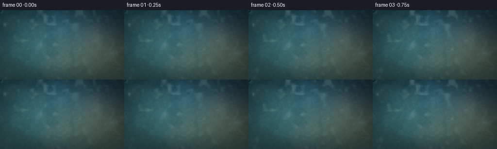
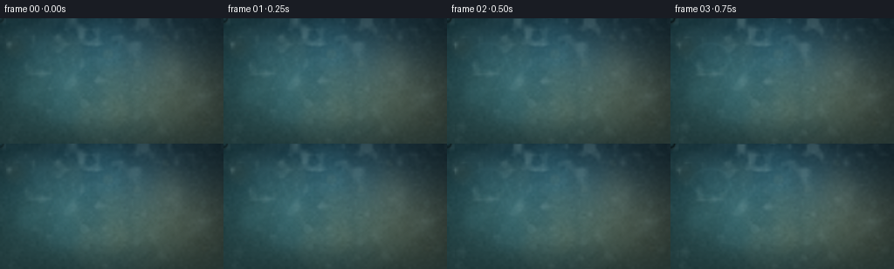
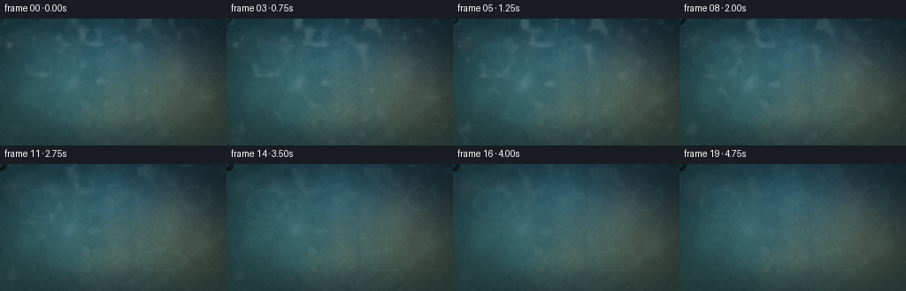

CODING AGENTS AS PIXEL WORLD MODELS
traex/DeepSeek-V4.1-Flash · phygen_111
点击播放 · 原生 RGB 像素
逐轮保存的候选
回放视频、检查图与代码变化。
每份候选均可单独播放。实际图片检查记录在下方工具轨迹中。
候选 01播放与检查图
点击播放 · 原生 RGB 像素

展开代码变化
--- 上一保存版本
+++ 本次保存版本
@@ -0,0 +1,448 @@
+"""Procedural timelapse of water vapor condensing on a cold glass pane."""
+
+from pathlib import Path
+import math
+
+import numpy as np
+from PIL import Image, ImageDraw, ImageFilter
+
+import artifact_io
+
+
+WIDTH = 256
+HEIGHT = 144
+FRAMES = 20
+FPS = 4.0
+SS = 4
+SW = WIDTH * SS
+SH = HEIGHT * SS
+CASE_DIR = Path(__file__).resolve().parent
+
+
+def smoothstep(edge0, edge1, value):
+ x = np.clip((value - edge0) / (edge1 - edge0), 0.0, 1.0)
+ return x * x * (3.0 - 2.0 * x)
+
+
+def soft_radial(x, y, cx, cy, sx, sy):
+ return np.exp(-0.5 * (((x - cx) / sx) ** 2 + ((y - cy) / sy) ** 2))
+
+
+def resize_float(array, size, resample=Image.Resampling.BILINEAR):
+ image = Image.fromarray(np.asarray(array, dtype=np.float32), mode="F")
+ return np.array(image.resize(size, resample=resample), dtype=np.float32, copy=True)
+
+
+def make_background(rng):
+ """A dim, humid room seen through a sheet of cold glass."""
+ yy, xx = np.mgrid[0:SH, 0:SW].astype(np.float32)
+ x = xx / (SW - 1)
+ y = yy / (SH - 1)
+
+ top = np.array([13.0, 28.0, 31.0], dtype=np.float32)
+ bottom = np.array([39.0, 64.0, 64.0], dtype=np.float32)
+ blend = smoothstep(0.0, 1.0, y)[..., None]
+ image = top * (1.0 - blend) + bottom * blend
+
+ cyan_glow = soft_radial(x, y, 0.18, 0.38, 0.42, 0.48)
+ blue_glow = soft_radial(x, y, 0.58, 0.16, 0.42, 0.34)
+ warm_glow = soft_radial(x, y, 0.82, 0.61, 0.25, 0.32)
+ image += cyan_glow[..., None] * np.array([24.0, 47.0, 44.0])
+ image += blue_glow[..., None] * np.array([8.0, 22.0, 36.0])
+ image += warm_glow[..., None] * np.array([44.0, 26.0, 7.0])
+
+ # Broad, soft out-of-focus room lights behind the glass.
+ bokeh = Image.new("RGBA", (SW, SH), (0, 0, 0, 0))
+ draw = ImageDraw.Draw(bokeh)
+ palette = [
+ (112, 176, 173),
+ (150, 190, 184),
+ (207, 194, 151),
+ (177, 155, 107),
+ (74, 139, 151),
+ ]
+ for _ in range(34):
+ cx = rng.uniform(0.02, 0.98) * SW
+ cy = rng.uniform(0.04, 0.96) * SH
+ radius = rng.uniform(4.0, 23.0) * SS
+ color = palette[int(rng.integers(0, len(palette)))]
+ alpha = int(rng.uniform(9, 34))
+ draw.ellipse(
+ (cx - radius, cy - radius, cx + radius, cy + radius),
+ fill=color + (alpha,),
+ )
+ bokeh = bokeh.filter(ImageFilter.GaussianBlur(6.0 * SS))
+ image = np.asarray(
+ Image.alpha_composite(
+ Image.fromarray(np.uint8(np.clip(image, 0, 255)), mode="RGB").convert("RGBA"),
+ bokeh,
+ ).convert("RGB"),
+ dtype=np.float32,
+ )
+
+ # A few smaller light discs retain a hint of bokeh shape.
+ discs = Image.new("RGBA", (SW, SH), (0, 0, 0, 0))
+ draw = ImageDraw.Draw(discs)
+ for _ in range(15):
+ cx = rng.uniform(0.02, 0.98) * SW
+ cy = rng.uniform(0.02, 0.95) * SH
+ radius = rng.uniform(2.0, 6.5) * SS
+ color = palette[int(rng.integers(0, len(palette)))]
+ draw.ellipse(
+ (cx - radius, cy - radius, cx + radius, cy + radius),
+ fill=color + (int(rng.uniform(10, 24)),),
+ )
+ discs = discs.filter(ImageFilter.GaussianBlur(1.4 * SS))
+ image = np.asarray(
+ Image.alpha_composite(
+ Image.fromarray(np.uint8(np.clip(image, 0, 255)), mode="RGB").convert("RGBA"),
+ discs,
+ ).convert("RGB"),
+ dtype=np.float32,
+ )
+
+ # Long, low-contrast reflections from a window or ceiling light.
+ reflection = Image.new("RGBA", (SW, SH), (0, 0, 0, 0))
+ draw = ImageDraw.Draw(reflection)
+ draw.polygon(
+ [
+ (int(-0.08 * SW), int(0.18 * SH)),
+ (int(0.35 * SW), int(-0.12 * SH)),
+ (int(0.48 * SW), int(-0.12 * SH)),
+ (int(0.03 * SW), int(0.25 * SH)),
+ ],
+ fill=(198, 222, 218, 13),
+ )
+ draw.polygon(
+ [
+ (int(0.54 * SW), int(1.05 * SH)),
+ (int(1.10 * SW), int(0.34 * SH)),
+ (int(1.10 * SW), int(0.45 * SH)),
+ (int(0.66 * SW), int(1.05 * SH)),
+ ],
+ fill=(175, 207, 205, 9),
+ )
+ reflection = reflection.filter(ImageFilter.GaussianBlur(5.0 * SS))
+ image = np.asarray(
+ Image.alpha_composite(
+ Image.fromarray(np.uint8(np.clip(image, 0, 255)), mode="RGB").convert("RGBA"),
+ reflection,
+ ).convert("RGB"),
+ dtype=np.float32,
+ )
+
+ # Fine glass grain and almost-invisible cleaning streaks.
+ grain = rng.normal(0.0, 1.0, (HEIGHT // 3 + 2, WIDTH // 3 + 2)).astype(np.float32)
+ grain = resize_float(grain, (SW, SH))
+ grain -= grain.mean()
+ grain /= max(grain.std(), 1.0e-6)
+ image += grain[..., None] * 1.6
+
+ streaks = Image.new("RGBA", (SW, SH), (0, 0, 0, 0))
+ draw = ImageDraw.Draw(streaks)
+ for _ in range(22):
+ sx = rng.uniform(0.0, 1.0) * SW
+ sy = rng.uniform(-0.1, 0.6) * SH
+ length = rng.uniform(0.12, 0.45) * SH
+ alpha = int(rng.uniform(2, 6))
+ draw.line(
+ (sx, sy, sx + rng.uniform(-3, 3) * SS, sy + length),
+ fill=(205, 225, 222, alpha),
+ width=max(1, int(rng.uniform(0.5, 1.6) * SS)),
+ )
+ streaks = streaks.filter(ImageFilter.GaussianBlur(1.1 * SS))
+ image = np.asarray(
+ Image.alpha_composite(
+ Image.fromarray(np.uint8(np.clip(image, 0, 255)), mode="RGB").convert("RGBA"),
+ streaks,
+ ).convert("RGB"),
+ dtype=np.float32,
+ )
+
+ # Cold edge falloff keeps attention on the condensing surface.
+ vignette = 1.0 - 0.30 * smoothstep(0.22, 0.90, np.sqrt(((x - 0.5) / 0.66) ** 2 + ((y - 0.5) / 0.72) ** 2))
+ image *= vignette[..., None]
+ image[..., 0] *= 0.96
+ image[..., 2] *= 1.04
+ return np.clip(image, 0.0, 255.0).astype(np.float32)
+
+
+def make_fog_field(rng):
+ """Precompute slowly varying fractal fields for drifting water vapor."""
+ fields = []
+ for base_scale, weight in ((10, 0.55), (19, 0.30), (36, 0.15)):
+ low = rng.normal(
+ 0.0,
+ 1.0,
+ (max(3, HEIGHT // base_scale + 3), max(3, WIDTH // base_scale + 3)),
+ ).astype(np.float32)
+ low = resize_float(low, (SW, SH))
+ low -= low.mean()
+ low /= max(low.std(), 1.0e-6)
+ fields.append(low * weight)
+ field = sum(fields)
+ field -= field.min()
+ field /= max(field.max(), 1.0e-6)
+ return field.astype(np.float32)
+
+
+def make_group(rng, count, radius_low, radius_high, final_scale_low, final_scale_high):
+ x = rng.uniform(-0.01, 1.01, count)
+ y = rng.uniform(-0.01, 1.01, count)
+ front = 0.62 * x + 0.38 * y
+ birth = -1.45 + 2.85 * front + rng.normal(0.0, 0.52, count)
+ birth = np.clip(birth, -2.0, 3.65)
+ radius = rng.uniform(radius_low, radius_high, count)
+ final_scale = rng.uniform(final_scale_low, final_scale_high, count)
+ alpha = rng.uniform(0.48, 0.84, count)
+ oval = rng.uniform(0.82, 1.20, count)
+ phase = rng.uniform(0.0, math.tau, count)
+ return {
+ "x": x,
+ "y": y,
+ "birth": birth,
+ "radius": radius,
+ "final_scale": final_scale,
+ "alpha": alpha,
+ "oval": oval,
+ "phase": phase,
+ }
+
+
+def make_runners(rng):
+ count = 28
+ return {
+ "x": rng.uniform(0.04, 0.96, count),
+ "y": rng.uniform(0.05, 0.70, count),
+ "birth": rng.uniform(-0.6, 2.2, count),
+ "start": rng.uniform(1.15, 4.05, count),
+ "speed": rng.uniform(7.0, 27.0, count),
+ "amp": rng.uniform(0.25, 1.6, count),
+ "phase": rng.uniform(0.0, math.tau, count),
+ "radius": rng.uniform(1.5, 3.5, count),
+ }
+
+
+def draw_bead(canvas, background, x, y, rx, ry, alpha, phase=0.0):
+ """Composite a small refractive lens with a cool rim and specular highlight."""
+ if rx <= 0.12 or ry <= 0.12 or alpha <= 0.005:
+ return
+ cx = x * SS
+ cy = y * SS
+ rxp = max(0.55, rx * SS)
+ ryp = max(0.55, ry * SS)
+ pad = max(2, int(math.ceil(max(rxp, ryp) * 1.28 + 2)))
+ x0 = max(0, int(math.floor(cx)) - pad)
+ x1 = min(SW, int(math.ceil(cx)) + pad + 1)
+ y0 = max(0, int(math.floor(cy)) - pad)
+ y1 = min(SH, int(math.ceil(cy)) + pad + 1)
+ if x1 <= x0 or y1 <= y0:
+ return
+
+ yy, xx = np.mgrid[y0:y1, x0:x1].astype(np.float32)
+ nx = (xx + 0.5 - cx) / rxp
+ ny = (yy + 0.5 - cy) / ryp
+ dist = np.sqrt(nx * nx + ny * ny)
+ feather = max(0.12, 1.4 / max(rxp, ryp))
+ mask = np.clip((1.0 - dist) / feather, 0.0, 1.0)
+ if not np.any(mask > 0.0):
+ return
+
+ # The bead acts as a tiny lens: it samples slightly displaced surroundings.
+ shift_x = int(round(rxp * 0.10))
+ shift_y = int(round(ryp * 0.17))
+ bx = np.clip(xx.astype(np.int32) + shift_x, 0, SW - 1)
+ by = np.clip(yy.astype(np.int32) - shift_y, 0, SH - 1)
+ lens = background[by, bx] * 1.045
+
+ vertical = np.clip(-ny, -1.0, 1.0)
+ lens += vertical[..., None] * np.array([5.0, 8.0, 8.0], dtype=np.float32)
+ lens += (1.0 - dist[..., None]) * np.array([3.0, 4.5, 4.0], dtype=np.float32)
+
+ # Dark meniscus at the lower edge and a bright caustic at the upper left.
+ lower = np.clip(0.5 + 0.5 * ny, 0.0, 1.0)
+ rim = np.exp(-0.5 * ((dist - 0.86) / 0.105) ** 2)
+ lens *= 1.0 - 0.21 * rim[..., None] * lower[..., None]
+
+ spec_x = -0.31 + 0.025 * math.sin(phase)
+ spec_y = -0.36
+ spec = np.exp(
+ -0.5
+ * (
+ ((nx - spec_x) / 0.19) ** 2
+ + ((ny - spec_y) / 0.15) ** 2
+ )
+ )
+ lens += spec[..., None] * np.array([48.0, 55.0, 52.0], dtype=np.float32)
+
+ arc = np.exp(-0.5 * ((dist - 0.80) / 0.12) ** 2)
+ arc_weight = np.clip(-0.55 * nx - 0.70 * ny, 0.0, 1.0)
+ lens += (arc * arc_weight)[..., None] * np.array([15.0, 20.0, 19.0], dtype=np.float32)
+
+ # A very soft contact shadow makes the bead sit on, rather than float over, glass.
+ halo = np.exp(-0.5 * ((dist - 1.13) / 0.18) ** 2) * (1.0 - mask)
+ local = canvas[y0:y1, x0:x1]
+ local *= 1.0 - 0.065 * halo[..., None]
+
+ mix = (mask * alpha)[..., None]
+ canvas[y0:y1, x0:x1] = local * (1.0 - mix) + lens * mix
+
+
+def add_runners(canvas, background, runners, t):
+ for index in range(len(runners["x"])):
+ birth = float(runners["birth"][index])
+ if t < birth:
+ continue
+ x0 = float(runners["x"][index])
+ y0 = float(runners["y"][index])
+ start = float(runners["start"][index])
+ base_r = float(runners["radius"][index])
+ appear = smoothstep(birth, birth + 0.75, t)
+ if t <= start:
+ draw_bead(
+ canvas,
+ background,
+ x0,
+ y0,
+ base_r * appear,
+ base_r * 1.08 * appear,
+ 0.58 * appear,
+ float(runners["phase"][index]),
+ )
+ continue
+
+ run_time = t - start
+ travel = float(runners["speed"][index]) * (run_time ** 1.22)
+ head_y = y0 + travel / HEIGHT
+ if head_y > 1.04:
+ continue
+ path_len = max(0.0, head_y - y0)
+ steps = max(2, int(path_len * HEIGHT / 2.2))
+ amp = float(runners["amp"][index])
+ phase = float(runners["phase"][index])
+ for step in range(steps + 1):
+ q = step / steps
+ py = y0 + path_len * q
+ px = x0 + amp * math.sin(py * 19.0 + phase) / WIDTH
+ pulse = 0.72 + 0.28 * math.sin(step * 2.13 + phase)
+ rr = base_r * (0.24 + 0.30 * q) * pulse
+ draw_bead(canvas, background, px, py, rr, rr * 1.28, 0.30 + 0.14 * q, phase + step)
+
+ head_r = base_r * (0.82 + 0.20 * appear)
+ px = x0 + amp * math.sin(head_y * 19.0 + phase) / WIDTH
+ draw_bead(canvas, background, px, head_y, head_r, head_r * 1.15, 0.68, phase)
+
+
+def add_condensation(canvas, background, micro, medium, large, t):
+ groups = (
+ (micro, 0.12, 0.55),
+ (medium, 0.18, 0.72),
+ (large, 0.35, 0.92),
+ )
+ for group, appear_low, appear_high in groups:
+ count = len(group["x"])
+ order = np.argsort(group["radius"])
+ for index in order:
+ birth = float(group["birth"][index])
+ if t < birth:
+ continue
+ age = t - birth
+ appear = smoothstep(appear_low, appear_high, age)
+ if appear <= 0.002:
+ continue
+ growth = smoothstep(0.0, 1.0, min(1.0, age / 3.2))
+ radius = float(group["radius"][index]) * (
+ 0.34 + 0.66 * growth
+ ) * (0.50 + 0.50 * float(group["final_scale"][index]) * appear)
+ oval = float(group["oval"][index])
+ wobble = 0.025 * math.sin(t * 2.0 + float(group["phase"][index]))
+ draw_bead(
+ canvas,
+ background,
+ float(group["x"][index]),
+ float(group["y"][index]),
+ radius * (1.0 + wobble),
+ radius * oval * (1.0 - wobble),
+ float(group["alpha"][index]) * (0.38 + 0.62 * appear),
+ float(group["phase"][index]),
+ )
+
+
+def add_vapor(canvas, fog_a, fog_b, t):
+ progress = t / (FRAMES / FPS)
+ xx = np.arange(SW, dtype=np.float32)[None, :]
+ yy = np.arange(SH, dtype=np.float32)[:, None]
+ x = xx / (SW - 1)
+ y = yy / (SH - 1)
+
+ shift_a = int(round((t * 2.3 + 3.0) * SS))
+ shift_b = int(round((t * 3.5 + 7.0) * SS))
+ shifted_a = np.roll(fog_a, -shift_a, axis=1)
+ shifted_b = np.roll(fog_b, shift_b, axis=1)
+ shifted_a = np.roll(shifted_a, int(round(t * 1.1 * SS)), axis=0)
+ shifted_b = np.roll(shifted_b, -int(round(t * 0.8 * SS)), axis=0)
+ noise = 0.66 * shifted_a + 0.34 * shifted_b
+
+ plume = soft_radial(x, y, 0.20, 0.35, 0.54, 0.54)
+ upper = 0.60 + 0.40 * smoothstep(0.75, 0.10, y)
+ strength = 0.105 + 0.19 * math.exp(-((progress - 0.20) / 0.32) ** 2)
+ strength *= 1.0 - 0.35 * smoothstep(0.72, 1.0, progress)
+ mask = smoothstep(0.49, 0.73, noise) * plume * upper * strength
+ mask = np.clip(mask, 0.0, 0.30)
+ vapor_color = np.array([176.0, 207.0, 205.0], dtype=np.float32)
+ canvas *= 1.0 - mask[..., None]
+ canvas += vapor_color * mask[..., None]
+
+
+def add_glass_haze(canvas, t):
+ progress = t / (FRAMES / FPS)
+ amount = 0.018 + 0.050 * smoothstep(0.20, 1.0, progress)
+ canvas *= 1.0 - amount
+ canvas += np.array([48.0, 66.0, 66.0], dtype=np.float32) * amount
+
+
+def make_frame(background, fog_a, fog_b, micro, medium, large, runners, frame_index):
+ t = frame_index / FPS
+ canvas = background.copy()
+ add_vapor(canvas, fog_a, fog_b, t)
+ add_condensation(canvas, background, micro, medium, large, t)
+ add_runners(canvas, background, runners, t)
+ add_glass_haze(canvas, t)
+ canvas = np.clip(canvas, 0.0, 255.0).astype(np.uint8)
+ image = Image.fromarray(canvas, mode="RGB")
+ image = image.resize((WIDTH, HEIGHT), Image.Resampling.LANCZOS)
+ return np.asarray(image, dtype=np.uint8)
+
+
+def main():
+ rng = np.random.default_rng(110723)
+ background = make_background(rng)
+ fog_a = make_fog_field(rng)
+ fog_b = make_fog_field(rng)
+
+ micro = make_group(rng, 1850, 0.26, 0.72, 0.80, 1.75)
+ medium = make_group(rng, 560, 0.65, 1.80, 1.00, 2.65)
+ large = make_group(rng, 76, 1.65, 3.80, 1.10, 2.45)
+ runners = make_runners(rng)
+
+ frames = []
+ for frame_index in range(FRAMES):
+ frame = make_frame(
+ background,
+ fog_a,
+ fog_b,
+ micro,
+ medium,
+ large,
+ runners,
+ frame_index,
+ )
+ frames.append(frame)
+
+ frames = np.stack(frames, axis=0)
+ artifact_io.save(frames, CASE_DIR)
+ print(f"saved {frames.shape} frames to {CASE_DIR}")
+
+
+if __name__ == "__main__":
+ main()
候选 02播放与检查图
点击播放 · 原生 RGB 像素
展开代码变化
--- 上一保存版本
+++ 本次保存版本
@@ -186,9 +186,17 @@
return field.astype(np.float32)
-def make_group(rng, count, radius_low, radius_high, final_scale_low, final_scale_high):
- x = rng.uniform(-0.01, 1.01, count)
- y = rng.uniform(-0.01, 1.01, count)
+def make_group(rng, count, radius_low, radius_high, final_scale_low, final_scale_high, cluster=0):
+ if cluster:
+ centers_x = rng.uniform(0.02, 0.98, max(4, count // cluster))
+ centers_y = rng.uniform(0.02, 0.98, max(4, count // cluster))
+ center_index = rng.integers(0, len(centers_x), count)
+ spread = rng.uniform(0.008, 0.055, count)
+ x = centers_x[center_index] + rng.normal(0.0, 1.0, count) * spread
+ y = centers_y[center_index] + rng.normal(0.0, 1.0, count) * spread * 1.15
+ else:
+ x = rng.uniform(-0.01, 1.01, count)
+ y = rng.uniform(-0.01, 1.01, count)
front = 0.62 * x + 0.38 * y
birth = -1.45 + 2.85 * front + rng.normal(0.0, 0.52, count)
birth = np.clip(birth, -2.0, 3.65)
@@ -420,9 +428,9 @@
fog_a = make_fog_field(rng)
fog_b = make_fog_field(rng)
- micro = make_group(rng, 1850, 0.26, 0.72, 0.80, 1.75)
- medium = make_group(rng, 560, 0.65, 1.80, 1.00, 2.65)
- large = make_group(rng, 76, 1.65, 3.80, 1.10, 2.45)
+ micro = make_group(rng, 1450, 0.36, 0.92, 0.82, 1.70, cluster=22)
+ medium = make_group(rng, 450, 0.82, 2.15, 1.00, 2.55, cluster=15)
+ large = make_group(rng, 92, 1.75, 4.25, 1.05, 2.35, cluster=8)
runners = make_runners(rng)
frames = []
候选 03播放与检查图
候选 04播放与检查图
点击播放 · 原生 RGB 像素

展开代码变化
--- 上一保存版本
+++ 本次保存版本
@@ -341,6 +341,28 @@
draw_bead(canvas, background, px, head_y, head_r, head_r * 1.15, 0.68, phase)
+def add_clear_patches(canvas, background, patches, t):
+ """Erase fine mist inside slow-drying clear patches without flattening the pane."""
+ yy, xx = np.mgrid[0:SH, 0:SW].astype(np.float32)
+ x = xx / (SW - 1)
+ y = yy / (SH - 1)
+ for patch in patches:
+ px, py = patch["x"], patch["y"]
+ rx, ry = patch["rx"], patch["ry"]
+ edge = np.sqrt(((x - px) / rx) ** 2 + ((y - py) / ry) ** 2)
+ mask = np.clip((1.0 - edge) / 0.22, 0.0, 1.0)
+ mask *= smoothstep(patch["birth"], patch["birth"] + 1.4, t)
+ if np.max(mask) <= 0.0:
+ continue
+ # Refracted background is slightly clearer and a touch cooler in the center.
+ clear = background * np.array([0.985, 1.015, 1.025], dtype=np.float32)
+ inner = (mask ** 1.8)[..., None]
+ canvas *= 1.0 - 0.46 * inner
+ canvas += clear * (0.46 * inner)
+ rim = np.exp(-0.5 * ((edge - 0.91) / 0.075) ** 2) * mask
+ canvas += rim[..., None] * np.array([7.0, 11.0, 11.0], dtype=np.float32)
+
+
def add_condensation(canvas, background, micro, medium, large, t):
groups = (
(micro, 0.12, 0.55),
@@ -393,7 +415,7 @@
plume = soft_radial(x, y, 0.20, 0.35, 0.54, 0.54)
upper = 0.60 + 0.40 * smoothstep(0.75, 0.10, y)
- strength = 0.105 + 0.19 * math.exp(-((progress - 0.20) / 0.32) ** 2)
+ strength = 0.095 + 0.19 * math.exp(-((progress - 0.20) / 0.32) ** 2)
strength *= 1.0 - 0.35 * smoothstep(0.72, 1.0, progress)
mask = smoothstep(0.49, 0.73, noise) * plume * upper * strength
mask = np.clip(mask, 0.0, 0.30)
@@ -413,6 +435,12 @@
t = frame_index / FPS
canvas = background.copy()
add_vapor(canvas, fog_a, fog_b, t)
+ patches = (
+ {"x": 0.18, "y": 0.31, "rx": 0.100, "ry": 0.125, "birth": -0.2},
+ {"x": 0.71, "y": 0.76, "rx": 0.130, "ry": 0.090, "birth": 0.5},
+ {"x": 0.86, "y": 0.27, "rx": 0.075, "ry": 0.105, "birth": 1.1},
+ )
+ add_clear_patches(canvas, background, patches, t)
add_condensation(canvas, background, micro, medium, large, t)
add_runners(canvas, background, runners, t)
add_glass_haze(canvas, t)
@@ -428,9 +456,9 @@
fog_a = make_fog_field(rng)
fog_b = make_fog_field(rng)
- micro = make_group(rng, 1450, 0.36, 0.92, 0.82, 1.70, cluster=22)
- medium = make_group(rng, 450, 0.82, 2.15, 1.00, 2.55, cluster=15)
- large = make_group(rng, 92, 1.75, 4.25, 1.05, 2.35, cluster=8)
+ micro = make_group(rng, 1850, 0.38, 0.98, 0.82, 1.72, cluster=22)
+ medium = make_group(rng, 540, 0.82, 2.10, 1.00, 2.55, cluster=15)
+ large = make_group(rng, 100, 1.75, 4.10, 1.05, 2.35, cluster=8)
runners = make_runners(rng)
frames = []
候选 05播放与检查图
点击播放 · 原生 RGB 像素

展开代码变化
--- 上一保存版本
+++ 本次保存版本
@@ -29,7 +29,7 @@
def resize_float(array, size, resample=Image.Resampling.BILINEAR):
- image = Image.fromarray(np.asarray(array, dtype=np.float32), mode="F")
+ image = Image.fromarray(np.asarray(array, dtype=np.float32))
return np.array(image.resize(size, resample=resample), dtype=np.float32, copy=True)
@@ -74,7 +74,7 @@
bokeh = bokeh.filter(ImageFilter.GaussianBlur(6.0 * SS))
image = np.asarray(
Image.alpha_composite(
- Image.fromarray(np.uint8(np.clip(image, 0, 255)), mode="RGB").convert("RGBA"),
+ Image.fromarray(np.uint8(np.clip(image, 0, 255))).convert("RGBA"),
bokeh,
).convert("RGB"),
dtype=np.float32,
@@ -95,7 +95,7 @@
discs = discs.filter(ImageFilter.GaussianBlur(1.4 * SS))
image = np.asarray(
Image.alpha_composite(
- Image.fromarray(np.uint8(np.clip(image, 0, 255)), mode="RGB").convert("RGBA"),
+ Image.fromarray(np.uint8(np.clip(image, 0, 255))).convert("RGBA"),
discs,
).convert("RGB"),
dtype=np.float32,
@@ -125,7 +125,7 @@
reflection = reflection.filter(ImageFilter.GaussianBlur(5.0 * SS))
image = np.asarray(
Image.alpha_composite(
- Image.fromarray(np.uint8(np.clip(image, 0, 255)), mode="RGB").convert("RGBA"),
+ Image.fromarray(np.uint8(np.clip(image, 0, 255))).convert("RGBA"),
reflection,
).convert("RGB"),
dtype=np.float32,
@@ -153,7 +153,7 @@
streaks = streaks.filter(ImageFilter.GaussianBlur(1.1 * SS))
image = np.asarray(
Image.alpha_composite(
- Image.fromarray(np.uint8(np.clip(image, 0, 255)), mode="RGB").convert("RGBA"),
+ Image.fromarray(np.uint8(np.clip(image, 0, 255))).convert("RGBA"),
streaks,
).convert("RGB"),
dtype=np.float32,
@@ -445,7 +445,7 @@
add_runners(canvas, background, runners, t)
add_glass_haze(canvas, t)
canvas = np.clip(canvas, 0.0, 255.0).astype(np.uint8)
- image = Image.fromarray(canvas, mode="RGB")
+ image = Image.fromarray(canvas)
image = image.resize((WIDTH, HEIGHT), Image.Resampling.LANCZOS)
return np.asarray(image, dtype=np.uint8)
可观测工具轨迹
实际执行的命令与返回图片。
命令 1exit 0
/bin/bash -c "pwd && rg --files -g '"'!**/.git/**'"' | sed -n '1,200p'"
命令 2exit 0
/bin/bash -c "sed -n '1,240p' prompt.txt"
命令 3exit 0
/bin/bash -c "sed -n '1,260p' GENERATION_RULES.md"
命令 4exit 0
/bin/bash -c 'cat task_spec.json'
命令 5exit 0
/bin/bash -c "find . -maxdepth 3 -type f -not -path './.git/*' -printf '%p %s bytes\\n' | sort"
命令 6exit 0
/bin/bash -c "sed -n '1,260p' artifact_io.py"
命令 7exit 1
/bin/bash -c 'python generate.py'
命令 8exit 0
/bin/bash -c 'python generate.py'
命令 9exit 0
/bin/bash -c "python - <<'PY'
from PIL import Image
import numpy as np
for i in (0, 4, 10, 15, 19):
a=np.asarray(Image.open(f'frames/{i:02d}.png')).astype(float)
print(i, 'mean', a.mean(axis=(0,1)).round(1), 'std', a.std().round(1), 'minmax', a.min(), a.max())
PY"命令 10exit 0
/bin/bash -c "command -v ffmpeg || true; ffmpeg -version 2>/dev/null | sed -n '1,2p'"
命令 11exit 0
/bin/bash -c 'git status --short 2>/dev/null || true'
命令 12exit 0
/bin/bash -c 'mkdir -p candidate_01 && cp -r frames pixels.npz inspection.png transition_check.png index.html candidate_01/'
命令 13exit 0
/bin/bash -c 'python generate.py'
命令 14exit 127
/bin/bash -c 'ffmpeg -y -loglevel error -framerate 4 -i frames/%02d.png -c:v libx264 -preset slow -crf 16 -pix_fmt yuv420p -movflags +faststart preview.mp4 && ffprobe -v error -show_entries stream=width,height,r_frame_rate,nb_frames,pix_fmt -show_entries format=duration,size -of default=noprint_wrappers=1 preview.mp4'
命令 15exit 0
/bin/bash -c 'mkdir -p candidate_02 && cp -r frames pixels.npz inspection.png transition_check.png index.html candidate_02/'
命令 16exit 0
/bin/bash -c 'python generate.py'
命令 17exit 0
/bin/bash -c "python - <<'PY'
from pathlib import Path
from PIL import Image
import numpy as np
frames=np.stack([np.asarray(Image.open(f'frames/{i:02d}.png')) for i in range(20)])
print('shape', frames.shape, 'dtype', frames.dtype)
print('frame means', [round(float(frames[i].mean()),2) for i in (0,5,10,15,19)])
print('mean absolute consecutive diff', [round(float(np.abs(frames[i].astype(float)-frames[i-1]).mean()),3) for i in range(1,20)])
print('artifacts', [(p.name,p.stat().st_size) for p in sorted(Path('.').glob('*')) if p.is_file()])
PY"命令 18exit 0
/bin/bash -c "python -m py_compile generate.py && python - <<'PY'
from PIL import Image
im=Image.open('frames/19.png')
im.crop((0,0,160,110)).resize((640,440), Image.Resampling.NEAREST).save('crop19.png')
PY"命令 19exit 0
/bin/bash -c 'mkdir -p .tmp/intermediate_candidates && mv candidate_01 candidate_02 crop19.png .tmp/intermediate_candidates/ 2>/dev/null || true; python -W error::DeprecationWarning generate.py'
命令 20exit 0
/bin/bash -c "python - <<'PY'
import json
from pathlib import Path
import numpy as np
from PIL import Image
spec = json.loads(Path('task_spec.json').read_text())
pixels = np.load('pixels.npz')['pixels']
assert pixels.shape == (spec['height'], spec['width'], spec['frames'])
assert len(list(Path('frames').glob('*.png'))) == spec['frames']
frames = np.stack([np.asarray(Image.open(f'frames/{i:02d}.png')) for i in range(spec['frames'])])
assert frames.shape == (spec['frames'], spec['height'], spec['width'], 3)
assert frames.dtype == np.uint8
assert np.any(frames[0] "'!= frames[-1])
assert all(np.any(frames[i] != frames[i - 1]) for i in range(1, len(frames)))
print('"'verified:', frames.shape, f'{spec[\"fps\"]} fps, {spec[\"frames\"] / spec[\"fps\"]:.1f}s')
print('unique colors:', len(np.unique(frames.reshape(-1, 3), axis=0)))
print('nonblank range:', int(frames.min()), int(frames.max()))
print('html bytes:', Path('index.html').stat().st_size)
PY"命令 21exit 0
/bin/bash -c "find . -maxdepth 2 -type f -not -path './.git/*' -printf '%p %s bytes\\n' | sort"
命令 22exit 0
/bin/bash -c "find .tmp -maxdepth 3 -type f -printf '%p %s bytes\\n' | sort | sed -n '1,100p'"
命令 23exit 0
/bin/bash -c "sed -n '1,80p' index.html"
视觉工具实际返回图片 1

视觉工具实际返回图片 2
视觉工具实际返回图片 3

视觉工具实际返回图片 4
视觉工具实际返回图片 5

视觉工具实际返回图片 6

视觉工具实际返回图片 7
视觉工具实际返回图片 8
保存候选 5 份；完成命令 23 次；可验证图片返回 8 张。原始 API 响应与完整日志保留在本地。